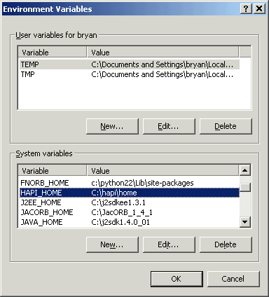

Installing and Running HAPI
These instructions will walk you through installing HAPI and making sure that it runs.
Step 1: Install the Java Virtual Machine
HAPI is written in Java, so you must have a Java Virtual Machine (JVM) installed on your system. If you are doing development, you should get the Java 2 Standard Edition Software Development Kit (SDK), which includes a JVM.
To ensure that the JVM is working properly, enter the following command:
java -version
A message should appear telling you what version of Java you are using. If instead you get a message telling you that "java" is not a valid command, the JVM is not installed properly. A common problem is that the "bin" directory of your JVM (where the program "java.exe" is stored) is not in you system path.
Step 2: Install HAPI
Get the latest distribution from the download page and unzip it into the directory where you would like to install HAPI. After you finish, the directory should contain hapi_0.4.jar, log4j.xml, testpanel.bat, and a lib folder (this contains the jar files of various libraries that HAPI uses).
Create the environment variable HAPI_HOME and point it to the directory where you installed HAPI. For example, on Windows, assuming that you unzip HAPI into c:\hapi, you would open control panel -> system, select the "advanced" tab, select "environment variables", and create a new system variable with the name "HAPI_HOME" and the value "c:\hapi". Here is a picture:
Step 3: Run the TestPanel
The following instructions are for Windows, so please translate into your OS if you are using something else.
- Open a Command Window or DOS prompt.
- Go to your HAPI_HOME directory. You can do this by entering the command "cd %HAPI_HOME%".
- Enter the command "testpanel". This will run a batch file (apologies to Unix users -- just take a look at the batch file and it will be obvious what to do).
When you do this, a user interface should open up. If it does not, make sure you have spelled everything correctly, and that testpanel.bat and hapi_0.4.jar are in the same directory as that from which you enter the command.
If you see the user interface, HAPI is installed properly. If you would like to know how to use this user interface, go here.